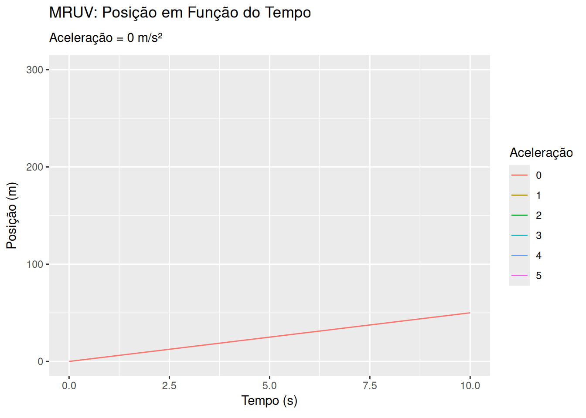
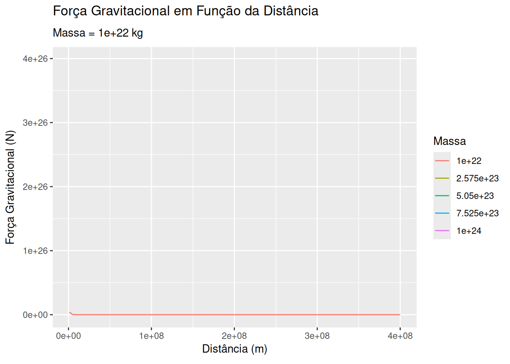
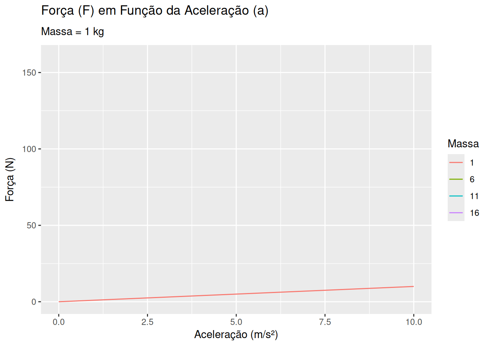
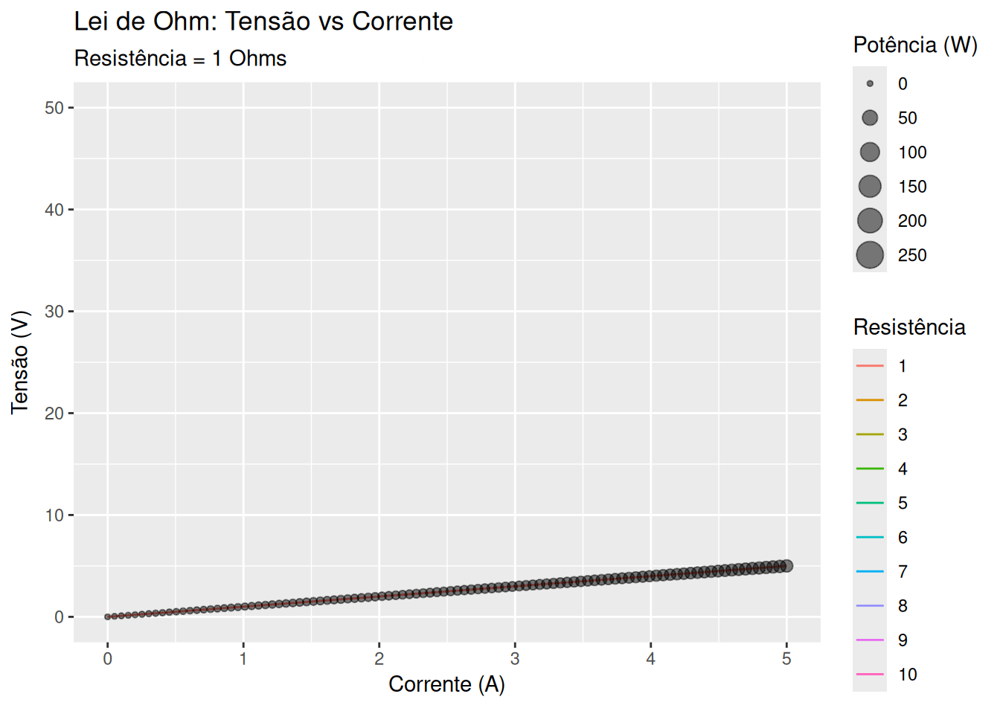
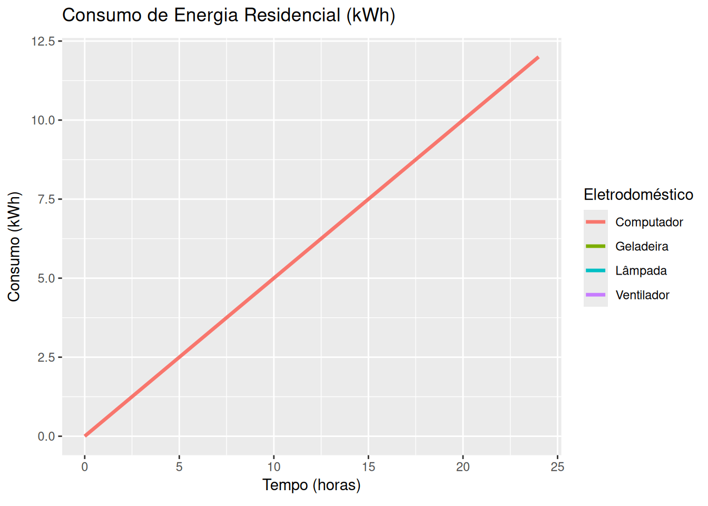
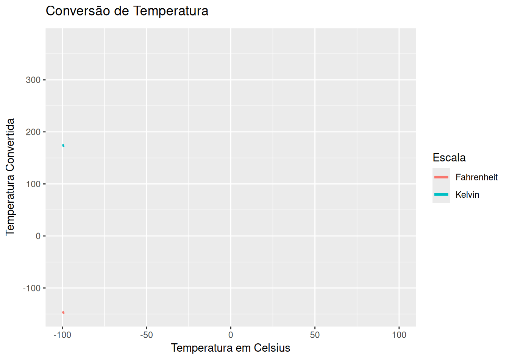
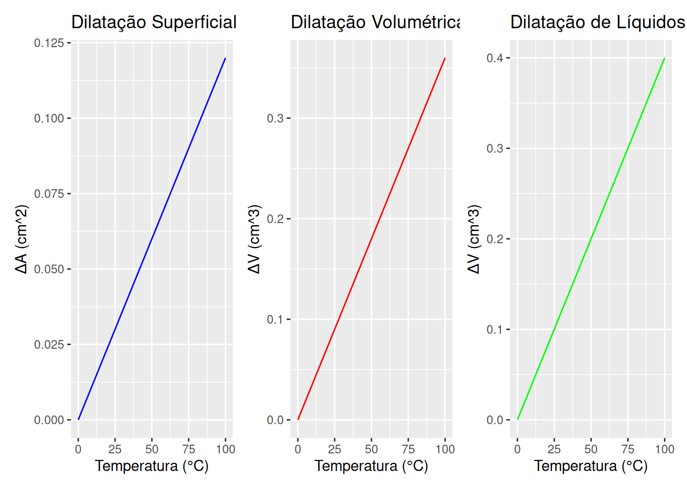

Física
1 Campo elétrico e distância
library(plotly)
# Constante k0 (aproximadamente 8.99 × 10^9 N·m²/C²)
k0 <- 8.99e9
# Valores de distância (evitando d = 0 para não dividir por zero)
d <- seq(0.1, 10, length.out = 100)
# Função para calcular o campo elétrico
calcular_campo <- function(Q, d) {
k0 * Q / d^2
}
# Valores iniciais de Q
Q_inicial <- 1e-6 # Carga inicial em Coulombs
# Gráfico interativo com slider para alterar Q
plot_ly(x = ~d, y = ~calcular_campo(Q_inicial, d), type = 'scatter', mode = 'lines') %>%
layout(
title = 'Campo Elétrico (E) em Função da Distância (d)',
xaxis = list(title = 'Distância (m)'),
yaxis = list(title = 'Campo Elétrico (N/C)', type = 'log'),
sliders = list(
list(
active = 0,
currentvalue = list(prefix = "Carga (Q): "),
steps = lapply(seq(1e-7, 1e-5, length.out = 10), function(Q_value) {
list(
label = sprintf("%.1e", Q_value),
method = "restyle",
args = list('y', list(calcular_campo(Q_value, d)))
)
})
)
)
)Sugestões:
Experimente modificar o gráfico, usando/substituindo alternativamente os comandos abaixo no trecho de código:
2 Movimento retilíneo uniformemente variado (MRUV)

library(ggplot2)
library(gganimate)
# Função para calcular a posição em MRUV
calcular_mruv <- function(s0, v0, a, t) {
s0 + v0 * t + 0.5 * a * t^2
}
# Dados
s0 <- 0
v0 <- 5
t <- seq(0, 10, length.out = 100)
a_values <- seq(0, 5, by = 1)
# Criando um dataframe com os dados
dados_mruv <- data.frame()
for (a in a_values) {
for (time in t) {
pos <- calcular_mruv(s0, v0, a, time)
dados_mruv <- rbind(dados_mruv, data.frame(Tempo = time, Posição = pos, Aceleração = a))
}
}
# Gráfico animado para MRUV
ggplot(dados_mruv, aes(x = Tempo, y = Posição, group = Aceleração)) +
geom_line(aes(color = as.factor(Aceleração))) +
labs(title = 'MRUV: Posição em Função do Tempo',
subtitle = 'Aceleração = {frame_time} m/s²',
x = 'Tempo (s)', y = 'Posição (m)', color = 'Aceleração') +
transition_time(Aceleração) +
ease_aes('linear')Sugestões:
Experimente modificar o gráfico, usando/substituindo alternativamente os comandos abaixo no trecho de código:
3 Força gravitacional e distância

# Função para calcular a força gravitacional
calcular_gravitacional <- function(m1, m2, d) {
G <- 6.67e-11
G * m1 * m2 / d^2
}
# Dados
m1 <- 5.97e24 # Massa da Terra em kg
m2_values <- seq(1e22, 1e24, length.out = 5)
d <- seq(1e6, 4e8, length.out = 100)
# Criando um dataframe com os dados
dados_gravitacional <- data.frame()
for (m2 in m2_values) {
for (distancia in d) {
forca <- calcular_gravitacional(m1, m2, distancia)
dados_gravitacional <- rbind(dados_gravitacional, data.frame(Distância = distancia, Força = forca, Massa = m2))
}
}
# Gráfico animado para força gravitacional
ggplot(dados_gravitacional, aes(x = Distância, y = Força, group = Massa)) +
geom_line(aes(color = as.factor(Massa))) +
labs(title = 'Força Gravitacional em Função da Distância',
subtitle = 'Massa = {frame_time} kg',
x = 'Distância (m)', y = 'Força Gravitacional (N)', color = 'Massa') +
transition_time(Massa) +
ease_aes('linear')Sugestões:
Experimente modificar o gráfico, usando/substituindo alternativamente os comandos abaixo no trecho de código:
4 2a. Lei de Newton - massa e aceleração

# Função para calcular a força
calcular_forca <- function(m, a) {
m * a
}
# Dados
a <- seq(0, 10, length.out = 100)
m_values <- seq(1, 20, by = 5)
# Criando um dataframe com os dados
dados_newton <- data.frame()
for (m in m_values) {
for (aceleracao in a) {
forca <- calcular_forca(m, aceleracao)
dados_newton <- rbind(dados_newton, data.frame(Aceleração = aceleracao, Força = forca, Massa = m))
}
}
# Gráfico animado para Segunda Lei de Newton
ggplot(dados_newton, aes(x = Aceleração, y = Força, group = Massa)) +
geom_line(aes(color = as.factor(Massa))) +
labs(title = 'Força (F) em Função da Aceleração (a)',
subtitle = 'Massa = {frame_time} kg',
x = 'Aceleração (m/s²)', y = 'Força (N)', color = 'Massa') +
transition_time(Massa) +
ease_aes('linear')Sugestões:
Experimente modificar o gráfico, usando/substituindo alternativamente os comandos abaixo no trecho de código:
5 Lei de Ohm - resistância, potencial, e corrente

library(ggplot2)
library(gganimate)
# Dados
resistencias <- seq(1, 10, by = 1) # Resistência de 1 a 10 Ohms
corrente <- seq(0, 5, length.out = 100) # Corrente de 0 a 5 Amperes
dados <- data.frame()
# Criando um dataframe com os dados
for (R in resistencias) {
for (I in corrente) {
V <- I * R # Calculando a Tensão
P <- V * I # Calculando a Potência
dados <- rbind(dados, data.frame(Corrente = I, Resistência = R, Tensão = V, Potência = P))
}
}
# Gráfico animado para Lei de Ohm e Potência
p <- ggplot(dados, aes(x = Corrente, y = Tensão)) +
geom_line(aes(color = as.factor(Resistência), group = Resistência)) +
geom_point(aes(size = Potência), alpha = 0.5) +
labs(title = 'Lei de Ohm: Tensão vs Corrente',
subtitle = 'Resistência = {frame_time} Ohms',
x = 'Corrente (A)', y = 'Tensão (V)', color = 'Resistência', size = 'Potência (W)') +
transition_time(Resistência) +
ease_aes('linear')
# Exibindo o gráfico
pSugestões:
Experimente modificar o gráfico, usando/substituindo alternativamente os comandos abaixo no trecho de código:
6 Energia elétrica e consumo residencial

library(ggplot2)
library(gganimate)
# Dados dos eletrodomésticos (potência em kW)
eletrodomesticos <- data.frame(
Nome = c("Lâmpada", "Ventilador", "Geladeira", "Computador"),
Potencia = c(0.1, 0.15, 0.2, 0.5) # Potências em kW
)
# Tempo (em horas) para o qual calculamos o consumo
tempo <- seq(0, 24, length.out = 100) # 0 a 24 horas
# Criando um dataframe com o consumo de energia
dados_consumo <- data.frame()
for (i in 1:nrow(eletrodomesticos)) {
consumo <- eletrodomesticos$Potencia[i] * tempo # Consumo em kWh
dados_consumo <- rbind(dados_consumo,
data.frame(Tempo = tempo,
Consumo = consumo,
Eletrodomestico = eletrodomesticos$Nome[i]))
}
# Gráfico animado para o consumo de energia
p <- ggplot(dados_consumo, aes(x = Tempo, y = Consumo, color = Eletrodomestico, group = Eletrodomestico)) +
geom_line(size = 1.2) +
labs(title = 'Consumo de Energia Residencial (kWh)',
x = 'Tempo (horas)', y = 'Consumo (kWh)', color = 'Eletrodoméstico') +
transition_states(Eletrodomestico, transition_length = 2, state_length = 1) +
ease_aes('linear')
# Exibindo o gráfico
pSugestões:
Experimente modificar o gráfico, usando/substituindo alternativamente os comandos abaixo no trecho de código:
7 Conversão de temperatura - Celsius, Kelvin, e Fahrenheit

library(ggplot2)
library(gganimate)
# Intervalo de temperatura em Celsius
celsius <- seq(-100, 100, by = 1)
# Cálculo das conversões
temp_data <- data.frame(
Celsius = celsius,
Fahrenheit = celsius * 9/5 + 32,
Kelvin = celsius + 273.15
)
# Reorganizando os dados para melhor visualização
temp_data_long <- reshape2::melt(temp_data, id.vars = "Celsius")
# Gráfico animado
p <- ggplot(temp_data_long, aes(x = Celsius, y = value, color = variable)) +
geom_line(size = 1.2) +
labs(title = 'Conversão de Temperatura',
x = 'Temperatura em Celsius', y = 'Temperatura Convertida',
color = 'Escala') +
transition_reveal(Celsius) +
ease_aes('linear')
# Exibindo o gráfico
pSugestões:
Experimente modificar o gráfico, usando/substituindo alternativamente os comandos abaixo no trecho de código:
8 Dilatação térmica - superficial, volumétrica, e de líquidos

library(ggplot2)
library(patchwork)
# Valores iniciais
area_inicial <- 100 # Área inicial (cm^2)
volume_inicial <- 100 # Volume inicial (cm^3)
beta <- 1.2e-5 # Coeficiente de dilatação superficial
gama_solido <- 3.6e-5 # Coeficiente de dilatação volumétrica
gama_liquido <- 4.0e-5 # Coeficiente de dilatação volumétrica de líquidos
# Variação de temperatura (0 a 100 °C)
delta_T <- seq(0, 100, by = 1)
# Cálculo das dilatações
dilatacao_superficial <- area_inicial * beta * delta_T
dilatacao_volumetrica <- volume_inicial * gama_solido * delta_T
dilatacao_liquido <- volume_inicial * gama_liquido * delta_T
# Dataframes para gráficos
dados_superficie <- data.frame(Temperatura = delta_T, Dilatacao = dilatacao_superficial)
dados_volumetrica <- data.frame(Temperatura = delta_T, Dilatacao = dilatacao_volumetrica)
dados_liquido <- data.frame(Temperatura = delta_T, Dilatacao = dilatacao_liquido)
# Criando os gráficos
grafico_superficie <- ggplot(dados_superficie, aes(x = Temperatura, y = Dilatacao)) +
geom_line(color = "blue") +
labs(title = "Dilatação Superficial", x = "Temperatura (°C)", y = "ΔA (cm^2)")
grafico_volumetrica <- ggplot(dados_volumetrica, aes(x = Temperatura, y = Dilatacao)) +
geom_line(color = "red") +
labs(title = "Dilatação Volumétrica", x = "Temperatura (°C)", y = "ΔV (cm^3)")
grafico_liquido <- ggplot(dados_liquido, aes(x = Temperatura, y = Dilatacao)) +
geom_line(color = "green") +
labs(title = "Dilatação de Líquidos", x = "Temperatura (°C)", y = "ΔV (cm^3)")
# Exibindo os gráficos lado a lado
grafico_superficie + grafico_volumetrica + grafico_liquidoSugestões:
Experimente modificar o gráfico, usando/substituindo alternativamente os comandos abaixo no trecho de código:
9 Corrente Alternada - Capacitor (EM13CNT202)
library(plotly)
# Valores de x
x <- seq(0, 5 * pi, length.out = 100)
plot_ly() %>%
add_trace(x = x, y = sin(x), mode = 'lines', name = 'Potencial') %>%
add_trace(x = 1.4*x, y = 0.9*cos(x)-0.4, mode = 'lines', name = 'Corrente') %>%
layout(
title = 'Tensão e Corrente num Capacitor',
xaxis = list(title = 'Ângulo (radianos)', range=c(0,15)),
yaxis = list(title = 'Valor'),
showlegend = TRUE
)Sugestões:
Experimente modificar o gráfico, usando/substituindo alternativamente os comandos abaixo no trecho de código: